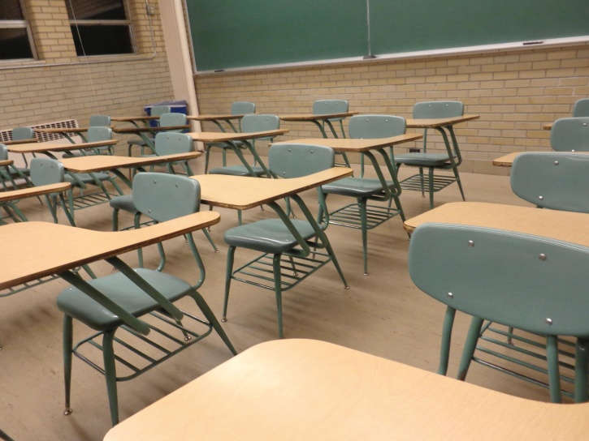
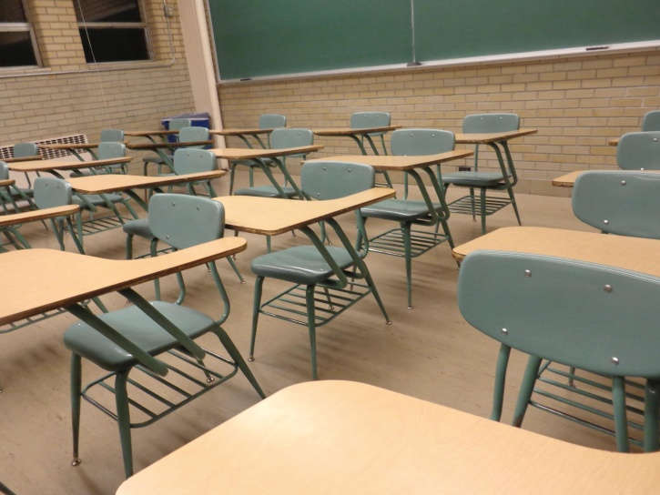

El desarrollo y el aprendizaje están relacionados pero son conceptos diferentes, pese a que en algunas ocasiones se usan como sinónimos.

El desarrollo y el aprendizaje están relacionados pero son conceptos diferentes, pese a que en algunas ocasiones se usan como sinónimos.

Adquisición de conocimiento para aduquirir habilidades y competencias.
Transmisión de conocimiento por parte de la comunidad y la sociedad
Existen dos teorías sobre la relación entre el desarrollo y el aprendizaje:
Teoría interaccionista: son directamente proporcionales, cuanta más educación se alcanza un mayor nivel de desarrollo (evolución).
Teoría no interaccionista: el desarrollo es un proceso natural que no depende de la educación formal. Incluso se considera que que la educación formal puede interferir en el desarrollo.
La piscología evolutiva o del desarrollo estudia el desarrollo psicológico de las personas a lo largo de la vida, es decir, el cambio de comportamiento que tiene lugar en las personas a través del tiempo.
A lo largo de la vida aparecen cambios de conducta y comportamientos que duran en el tiempo y no suelen ser reversibles.
Estos cambios no dependen de los contextos físicos y sociales del entorno, son comunes a todos los miembros de la especie.
El desarrollo tampoco se rige a la voluntad o conciencia de la persona.
Obra publicada con Licencia Creative Commons Reconocimiento Compartir igual 4.0